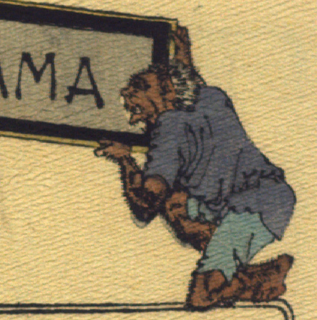

茶色の肌の鬼。白っぽい髪が生えている。青い上着と水色の股引を着けている。両手で物語の題名が書かれた額を持ち、片膝立ちでしゃがんでいる。腕や脚に毛が生えている。
出典：親書誌：U426_nichibunken_0113：Les Ogres d'Oyeyama／日付：2006／資源識別子：U426_nichibunken_0113_0002_0002
Copyright (c)2010- International Research Center for Japanese Studies, Kyoto, Japan. All rights reserved.